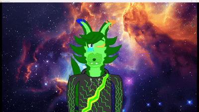
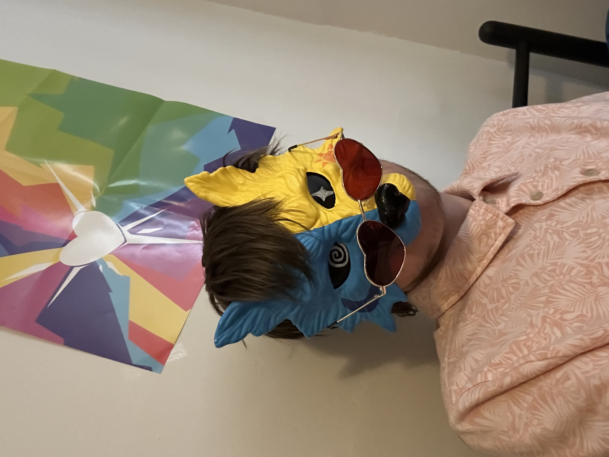
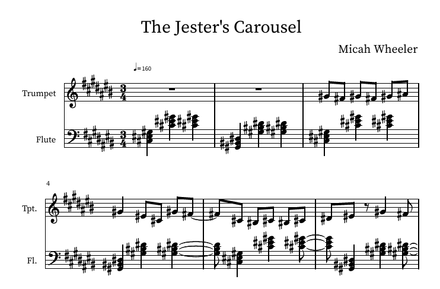
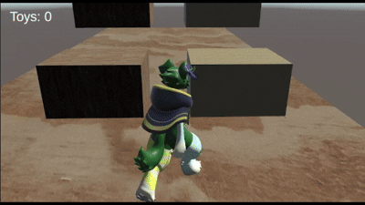
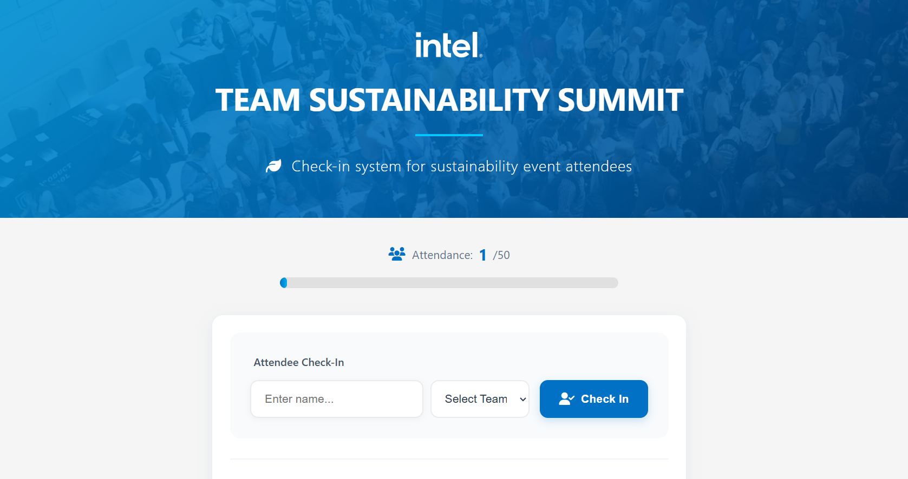
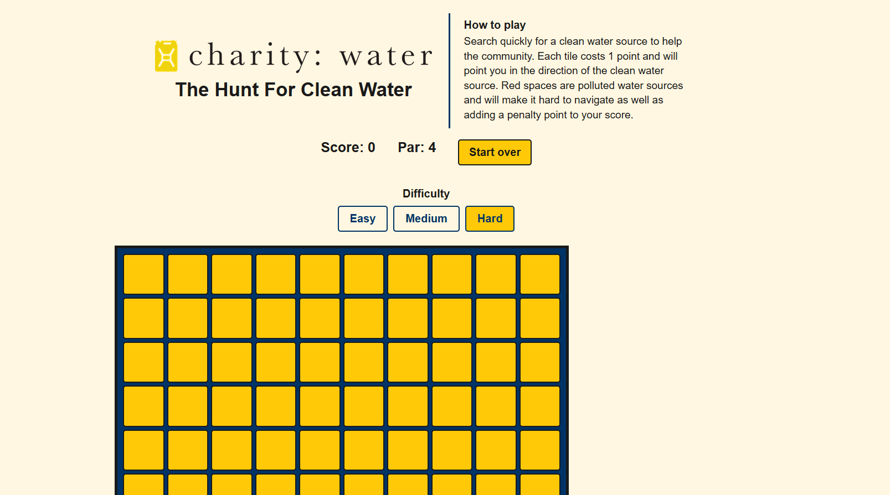
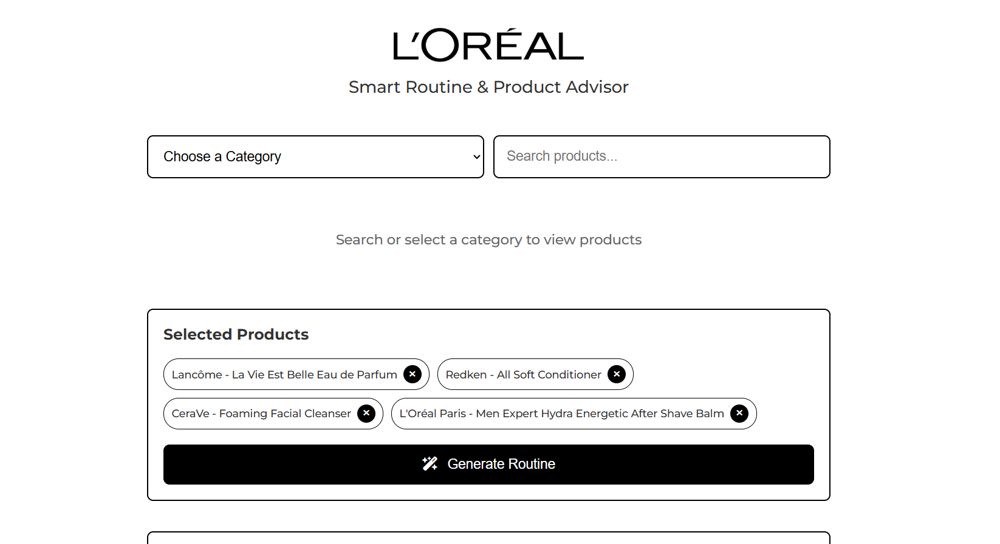
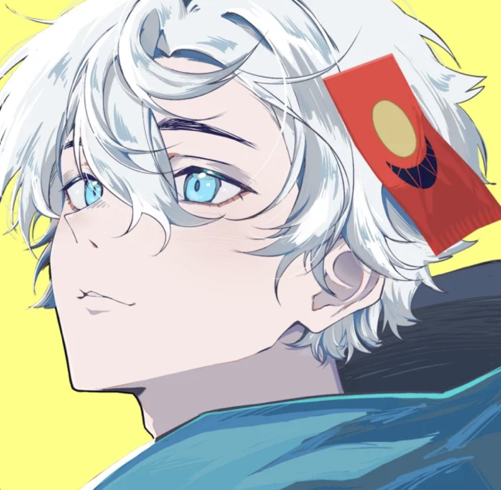
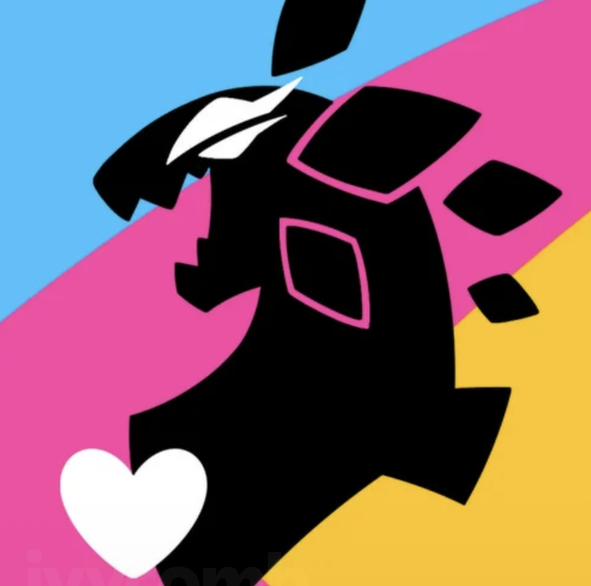
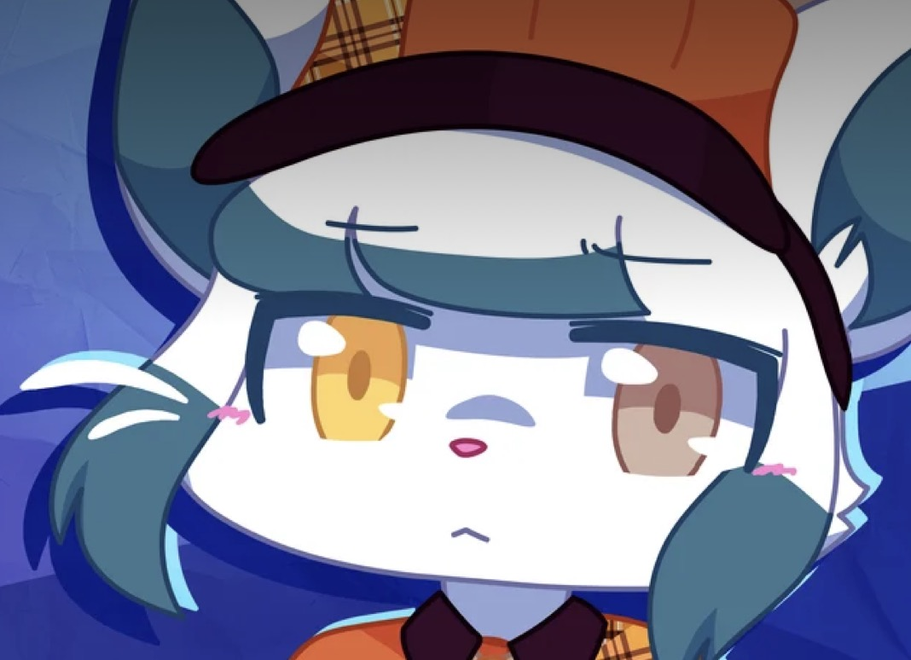

2d Model
A rigged 2d model of a character of mine that can be used as a facecam for fun.
Digital Art + AnimationComputer Science Student
I am a creative student learning how to code worlds, design interfaces, and turn ideas into interactive experiences.

I am currently studying Computer Science and I am excited to build projects that mix design, code, and storytelling. I enjoy learning new skills, solving problems creatively, and creating clean digital experiences that feel welcoming and useful. I am passionate about music, art, and technology, and I love to explore how these fields intersect in the digital world. I aim to try to discover new ways to express ideas and connect with people through my work, and to just have fun.

A rigged 2d model of a character of mine that can be used as a facecam for fun.
Digital Art + Animation
A fun song I made that I tried to make sound like a carousel. It has a fun and whimsical feel, and I hope it brings a nostalgic smile to your face.
Digital Music
A fun game about finding lost toys, find toys to gain abilities and explore the world. I made this game in Unity and it was a fun experience to learn how to make a game from scratch.
Game Development
A project to check in attendees for an Intel event.
Visit Website open_in_new
A game made to raise awareness for the lack of clean water in developing countries.
Visit Website open_in_new
A website that helps users build and manage their skincare routines using an ai assistant.
Visit Website open_in_new
A Jpop artist who I think has a very powerful and energetic sound that makes you want to move.

a great artist with electronic grooves and a futuristic vibe.

an artist who specializes in jazz like music that hits hard.